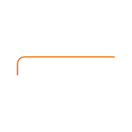
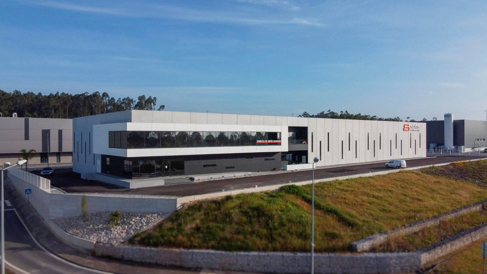
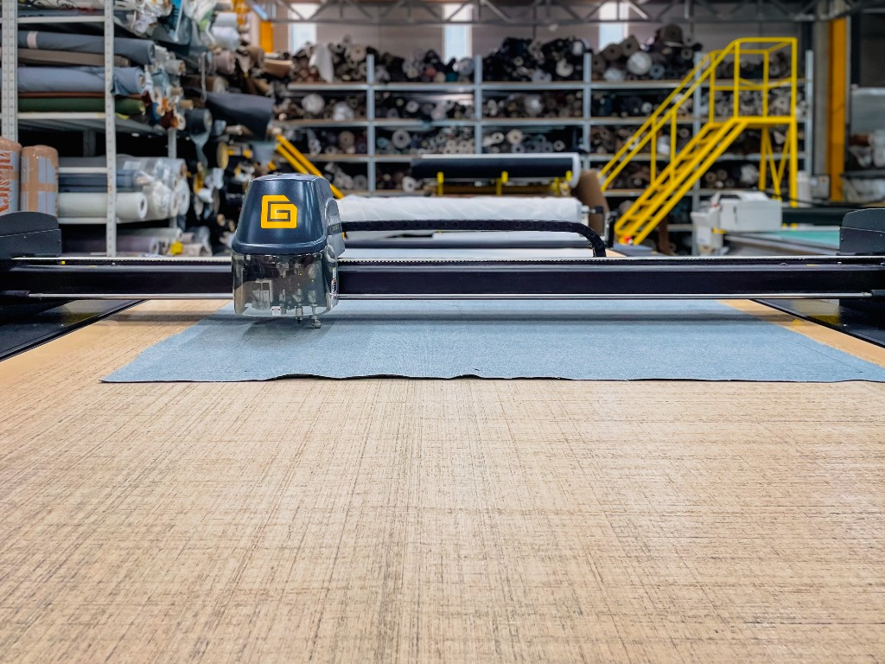
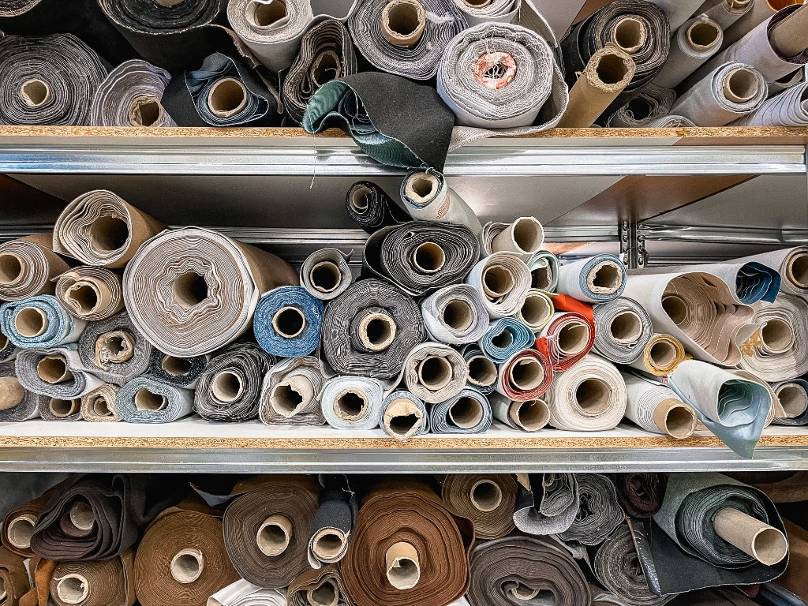
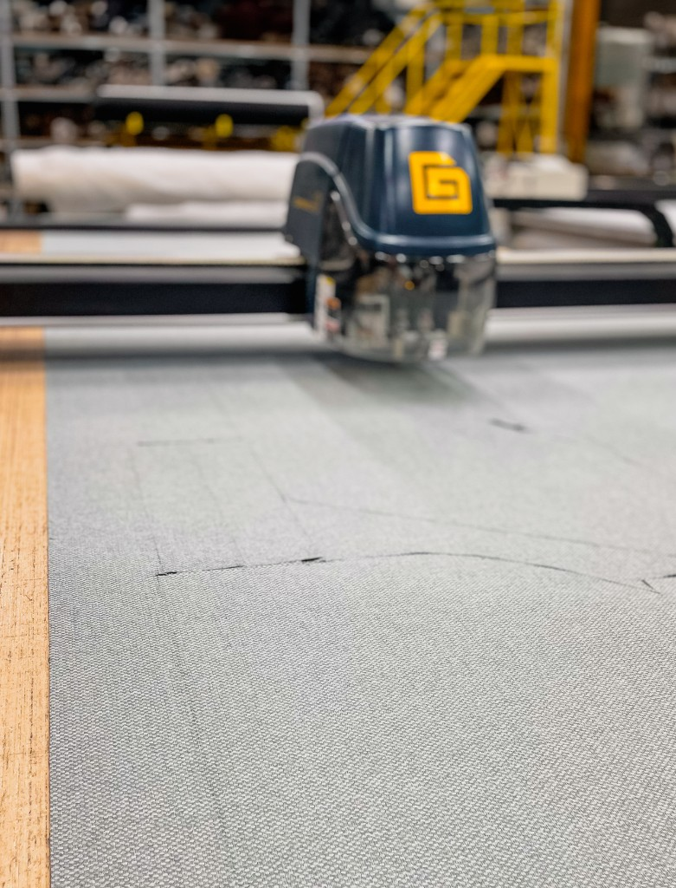
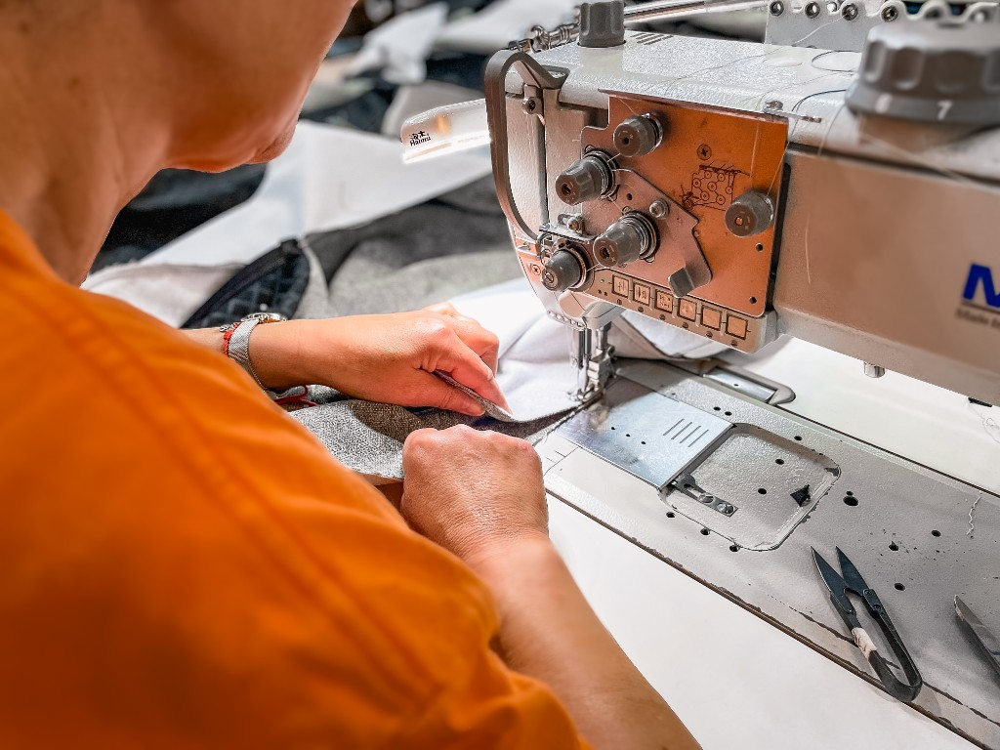
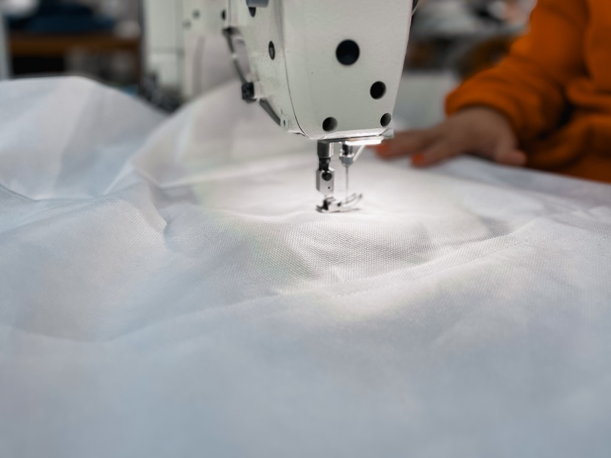

World Design
Identidade própria em cada coleção - linhas contemporâneas, modulares e pensadas para durar além das modas passageiras.

Indústria portuguesa de sofás em pele e tecido - com design, conforto e durabilidade como pilares de cada peça que sai de Montemor-o-Velho.
A Stoffus nasceu em 2004, em Montemor-o-Velho, com uma equipa experiente no desenvolvimento e fabrico de sofás em pele e tecido.
A empresa aposta numa simbiose de qualidade, design, conforto e durabilidade dos seus produtos como forma de proporcionar aos seus clientes a melhor solução final.
Os produtos da Stoffus já mereceram por diversas vezes o destaque de algumas das mais conceituadas publicações do sector a nível internacional.

Fábrica · ShowroomO centro de design da Stoffus analisa as tendências do mercado, desenvolvendo produtos que se mantêm actuais por um longo período de tempo, com a modernidade exigida por cada um dos consumidores.
Identidade própria em cada coleção - linhas contemporâneas, modulares e pensadas para durar além das modas passageiras.
Dezenas de modelos, centenas de revestimentos e configuração à medida - para a casa, para o profissional, para o projecto.
Ferramenta digital para visualizar módulos, tecidos e orçamento antes da produção - disponível para clientes e profissionais.
Estruturas, espumas e acabamentos seguem padrões rigorosos para assegurar conforto, ergonomia e durabilidade.
Para que estes objectivos sejam cumpridos, a empresa adquire madeira de pinho da melhor qualidade, sujeita a tratamento ecológico para a construção das estruturas dos sofás.
Todos os componentes são seleccionados tendo em vista a protecção do meio ambiente, assim como a saúde de cada utilizador. As espumas e revestimentos utilizados são comprados aos melhores e maiores produtores mundiais.
O centro de controlo de qualidade Stoffus analisa cada peça produzida e, depois de certificar a conformidade de cada sofá, coloca uma etiqueta que confere 3 anos de garantia. A experiência de cada operário contribui para um produto com elevados padrões de qualidade.
Parque de Negócios 7/8 · 3140-258 Montemor-o-Velho

Corte CNC · Armazém



Cobertura contra defeitos de fabrico, com prazos alargados nos componentes estruturais.
A Stoffus garante o produto por um período de acordo com os materiais utilizados, contra defeitos de fabrico. O produto com anomalias será sempre reparado, procedendo-se apenas à substituição quando tecnicamente não for possível corrigir o problema de acordo com a lei geral de garantia.
Garantia vitalícia nas estruturas em madeira de pinho tratada ecologicamente.
Cobertura específica para espumas e fibras utilizadas nos assentos e encostos.
Em utilização industrial ou pública, a garantia geral passa a um ano, nos termos legais aplicáveis.
A perda de volume dos assentos e encostos é uma consequência normal da utilização de artigos estofados e não deve ser considerada um defeito de fabrico.
Quer ver modelos ao vivo, experimentar tecidos e pedir orçamento? Indique a sua zona e sugerimos o local de visita mais conveniente.
Pedir indicaçãoLojistas, arquitectos e decoradores podem aceder ao configurador 3D, orçamentos PDF e apoio comercial dedicado.
Stoffus 3D
+351 239 700 799
geral@stoffus.pt
Modelos modulares, tecidos Eleganza e configuração em 3D - tudo o que precisa para escolher o sofá certo.